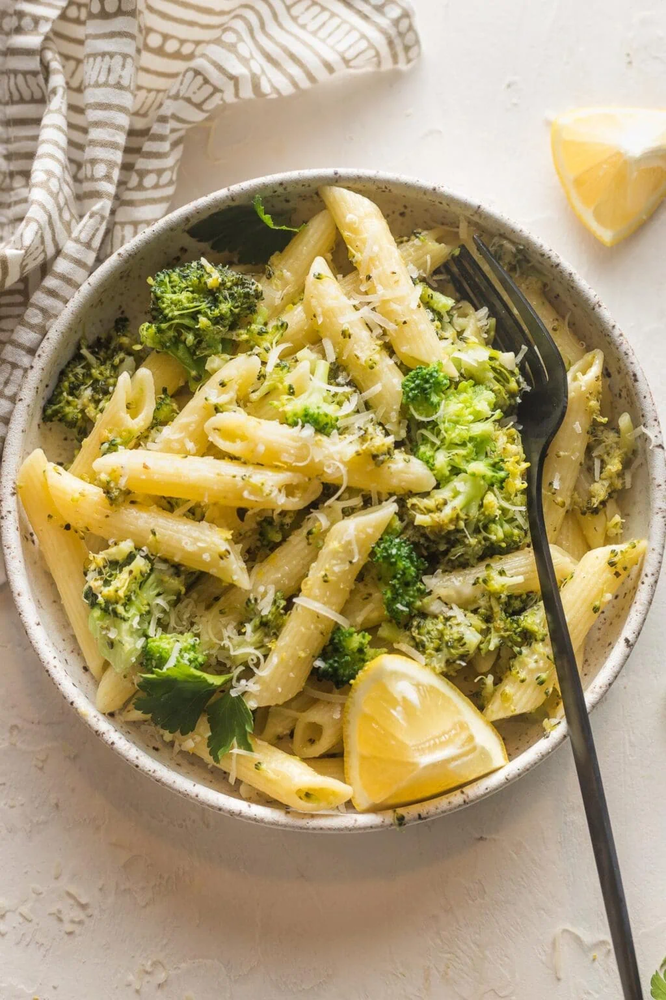
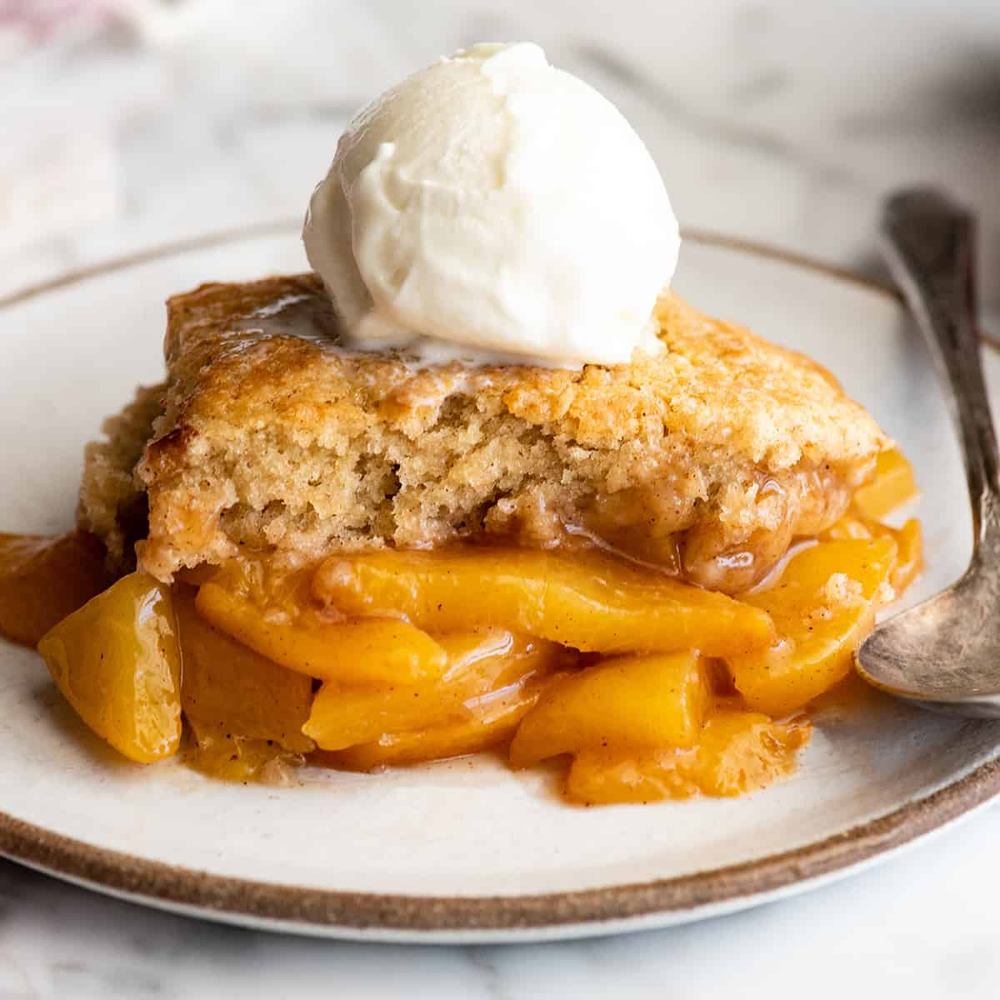
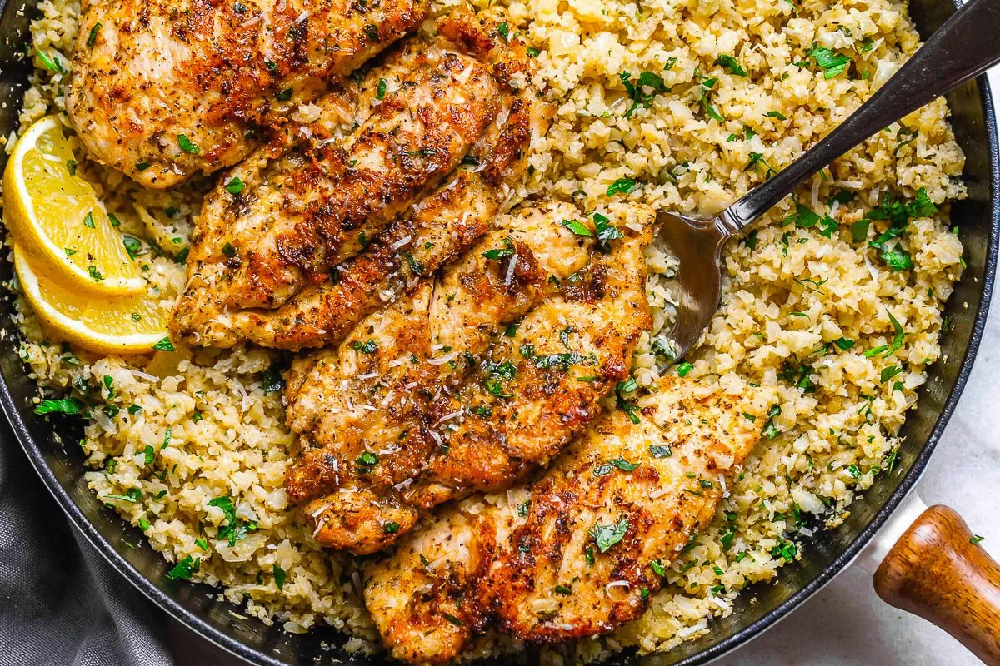

 Broccoli Lemon Pasta Pasta, broccoli, lemon, garlic Microwave-only 15 min ★★★★☆ 4.2 View Recipe Save
 Peach Cobbler Peaches, oats, cinnamon, butter Rice Cooker 25 min ★★★★★ 4.8 View Recipe Save
 Garlic Butter Rice with Chicken Rice, chicken, garlic, butter Rice Cooker 30 min ★★★★☆ 4.0 View Recipe Save